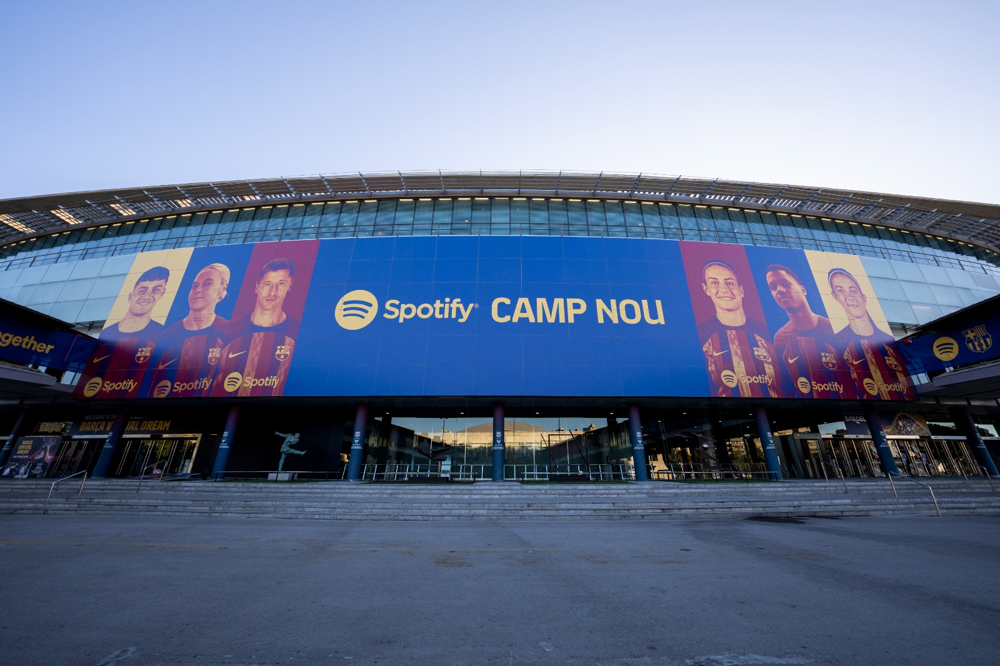

Part 3 of 3: The Age of Levers — How FC Barcelona Mortgaged Its Future to Survive the Present
This is the final instalment of a three-part series. Part 1 examined the democratic foundations of FC Barcelona. Part 2 traced the club's sporting peak and financial collapse. This concluding piece examines the Laporta recovery strategy, the Spotify era, and whether the socio model can survive the twenty-first century.
In the summer of 2021, Joan Laporta returned to the FC Barcelona presidency with a mandate that would have seemed almost paradoxical to the club's founders: to save a democratic, member-owned institution by deploying the financial instruments of Wall Street.
The club he inherited was, in the assessment of external auditors, effectively insolvent. Over a billion euros in debt. A wage bill exceeding total income. No capacity to register new signings under La Liga's Financial Fair Play rules. And Lionel Messi — the emblem of everything that had once made the club transcendent — unable to renew his contract, departing in tears to PSG.
What followed was one of the most audacious financial restructurings in the history of professional sport.
The "Economic Levers": Selling the Future to Fund the Present
Laporta's administration introduced a strategy that became widely known as the "economic levers" (palanques econòmiques). The fundamental logic was straightforward, if uncomfortable: the club possessed long-term assets with significant value, and selling portions of those assets could generate the immediate liquidity required to stabilise operations and invest in the playing squad.
The primary asset sold was the club's share of La Liga's collective television rights — a future income stream extending 25 years into the future.
| Lever | Asset | Buyer | Value | Duration |
|---|---|---|---|---|
| First Lever | 10% of La Liga TV rights | Sixth Street Partners | €267 million | 25 years |
| Second Lever | 15% of La Liga TV rights | Sixth Street Partners | Over €300 million | 25 years |
| Third Lever | 24.5% of Barça Studios | Socios.com | €100 million | Ownership stake |
| Fourth Lever | 24.5% of Barça Studios | Orpheus Media | €100 million | Ownership stake |
Source: FC Barcelona Official Financial Disclosures
The strategy allowed the club to record what appeared to be an extraordinary reversal of fortune in their 2021–22 accounts, posting a surplus and — crucially — satisfying La Liga's financial rules sufficiently to register new signings, including Robert Lewandowski, Raphinha, Jules Koundé, and Ousmane Dembélé on a new contract.
The Long-Term Cost
The strategic trade-off, however, is significant and deserves clear articulation: selling 25% of television rights for 25 years means that for a quarter of a century, the club will receive substantially reduced broadcasting income. The economic gain is front-loaded; the economic cost is distributed across decades.
Critics, including prominent socio activists and sports economists, have argued that the levers represent a form of "reverse mortgaging" — exchanging long-term financial health for short-term operational survival. Supporters of the strategy counter that without this intervention, the alternative was either private acquisition or a catastrophic sporting decline that would have permanently destroyed the club's commercial value.
Both arguments contain validity. The levers are neither salvation nor catastrophe — they are a calculated bet on the club's capacity to generate enough revenue growth over 25 years to more than compensate for what has been surrendered.
The Spotify Camp Nou: Renaming the "Temple"
The most symbolically significant commercial decision of the Laporta era — and arguably in the club's post-2006 history — was the 2022 naming rights deal with the music streaming service Spotify.
For the first time in its history, FC Barcelona sold the naming rights to its stadium — an institution that had been known universally as the Camp Nou since its inauguration in September 1957. As reported by the Financial Times, the ground was renamed the Spotify Camp Nou, with the deal valued at approximately €460 million through to 2034.
The vote among the club's delegate assembly was emphatic: 89% ratified the deal, a figure that reveals the extent to which the socios had pragmatically accepted commercial necessity as the precondition for institutional survival.
Espai Barça: The Stadium as Financial Instrument
The Spotify naming rights deal is the cornerstone of a far larger infrastructure project known as Espai Barça — a €1.45 billion comprehensive renovation of the stadium and its surrounding district. The project, which has seen the club temporarily play home matches at the Lluís Companys Olympic Stadium during construction, is designed to fundamentally transform the club's revenue structure.
The financing was secured through a complex arrangement involving unsecured loans and securitised bonds from 20 different investors, including investment banks Goldman Sachs and JP Morgan. As reported by Bloomberg, the repayment structure extends to 2050 — meaning that club presidents who have not yet been elected will still be managing obligations created by the current administration.
Projected Annual Revenue Uplift (Post-Renovation, 2027):
| Revenue Stream | Projected Annual Income |
|---|---|
| VIP Seating & Premium Hospitality | €120 million |
| New Museum and Visitor Experience | €80 million |
| Expanded Commercial Areas | c. €47 million |
| Total Projected Revenue (by 2033) | €247–346 million |
| Estimated Annual Repayment (Goldman Sachs) | €94 million |
Source: FC Barcelona, Espai Barça Financial Projections
The business logic is compelling: a 105,000-capacity stadium with world-class VIP facilities, premium hospitality, and year-round visitor attractions could genuinely generate revenue at a scale that makes the debt manageable. The risk is that this logic depends on a sustained period of sporting success, high global demand, and macroeconomic stability — none of which are guaranteed.
The Dubai Deal and the Humanitarian Retreat
In early 2026, the club announced a significant commercial arrangement with Aspin Holdings, a UAE-based real estate developer, for a branded residential complex in Dubai: a "mini-city" featuring towers and community facilities carrying the FC Barcelona brand. As reported by Reuters, the deal generates €12 million annually in licensing fees.
It also includes the placement of a Dubai project-related logo on the back of the first-team shirt for domestic competitions — replacing the UNICEF High Commissioner for Refugees (UNHCR/ACNUR) branding that had occupied that space.
The institutional significance of this transition deserves pause. In 2006, the club made global headlines by paying UNICEF to put a humanitarian logo on its shirt. In 2026, the club is receiving payment to place a luxury real estate logo in the same position. Commentators writing in El País at the time noted that the shift amounted to more than a commercial decision — it was a statement about what the club now considers acceptable, and what it believes its members will tolerate. The arc from the humanitarian partnership to the Dubai property deal is, in miniature, the arc of the club's entire commercial evolution over two decades.
The 2026 Presidential Election: Democratic Mandate for Commercial Pragmatism
On March 15, 2026, FC Barcelona held a presidential election — a democratic exercise that remains genuinely unusual among elite European football clubs. Over 48,000 socios cast ballots, representing 42.34% of the total electorate, at the Camp Nou and satellite polling stations across Catalonia.
| Candidate | Votes | Percentage |
|---|---|---|
| Joan Laporta | 32,934 | 68.18% |
| Víctor Font | 14,385 | 29.78% |
| Blank/Invalid Votes | 984 | 2.04% |
Source: FC Barcelona Electoral Commission (March 2026)
Laporta's 68.18% victory was a decisive endorsement of his financial strategy, his "Defendem el Barça" ("We Defend Barça") candidacy, and — implicitly — the economic levers, the Spotify deal, and the Dubai partnership. Font's campaign had positioned itself as a more cautious, sustainable alternative, but the socios chose continuity over reform.
The election also revealed a critical institutional tension. Under Laporta's watch, the club's debt had grown from approximately €1.3 billion (inherited in 2021) to over €2 billion when Espai Barça loans are included. Supporters argue this debt is "productive" — invested in assets that will generate returns. Critics note that the democratic accountability of the socio model only functions if socios have full transparency over what obligations are being created in their name.
The 2024–25 Financial Results: A Cautious Recovery
The club's financial statements for the 2024–25 season offer genuine grounds for measured optimism, alongside reasons for continued scrutiny:
| Financial Indicator | Value | Context |
|---|---|---|
| Ordinary Revenue | €994 million | Approaching the €1 billion milestone |
| Ordinary Profit | €2 million | Second consecutive year of positive results |
| Debt Reduction | €90 million | Down to €469M (excluding Espai Barça obligations) |
| Wage Bill (% of Revenue) | 54% | Within UEFA Financial Sustainability regulations |
Source: FC Barcelona Audited Financial Statements 2024–25
Most significantly, the club was reported in early 2026 to be within €10 million of achieving compliance with La Liga's 1:1 Financial Fair Play rule — meaning it would soon be able to spend one euro on squad investment for every euro saved or earned, rather than operating under the far more restrictive ratios that had applied since 2021.
This milestone, if achieved, would represent the end of the acute phase of the financial crisis — not the end of the debt, but the end of the emergency.
The Unresolved Question: Can a Democratic Club Survive the Twenty-First Century?
The arc of FC Barcelona's history, from Joan Gamper's foundational advertisement in 1899 to the Goldman Sachs loan agreements of the 2020s, raises a question that no balance sheet can fully answer: can a democratic, community-owned institution sustain the economics of elite twenty-first-century sport?
The evidence is genuinely contradictory. On one hand, the socio model has survived everything the twentieth century threw at it — military dictatorship, civil war, political exile, financial collapse — precisely because its legitimacy is rooted in community ownership rather than the wealth of an individual. On the other hand, the survival of that model now depends on deploying the same financial instruments — asset securitisation, naming rights deals, luxury real estate partnerships — that define the private equity-owned clubs the socios claim to be different from.
Joan Laporta's re-election in 2026 suggests that the majority of socios are willing to accept the current trade-off: commercial transformation as the price of maintaining democratic ownership, rather than ceding control to private capital. Whether this bet proves prescient or catastrophic depends on decisions — sporting, financial, and cultural — that have yet to be made.
A Personal Postscript: Why Any of This Matters
I want to end this series not with a balance sheet, but with a memory — because that is, honestly, where it all began for me.
In April 2009, my footballing world was the Premier League. I had grown up on its pace, its physicality, what some called its "heavy metal" intensity. My particular obsession was Fernando Torres at Liverpool — his clinical finishing, the way he seemed to run through defenders rather than past them. On the night of April 8, 2009, I had just finished watching Torres open the scoring against Chelsea at Anfield with that trademark precision when, almost by accident, I stumbled onto a replay broadcast of something that had been playing simultaneously on the other side of the continent.
It was Barcelona's 4–0 demolition of Bayern Munich in the Champions League quarter-final. The same hour. A completely different universe.
I remember sitting with that contrast for a long time. The Liverpool match I had just watched was magnificent in its own way — urgent, direct, muscular. But what I was seeing now felt like a different language entirely. The tiki-taka rhythm, the suffocating yet beautiful press, and above all, a 21-year-old Lionel Messi who scored twice in a first-half blitz — doing things that seemed to exist outside the normal vocabulary of the sport. It was the first time I genuinely understood what people meant when they called football an art form rather than simply a competition.
That broadcast was, for me, the gateway into everything this series has tried to examine. The Més que un club philosophy. The La Masia method. The democratic structure that had sustained a club through dictatorship and made that extraordinary generation of players possible. I became a student of it — not just a fan, but someone genuinely curious about how an institution like this could exist at all.
Which is precisely why the journey since 2009 has been such a complicated one to watch. The move from the UNICEF jersey to the Qatar Airways jersey. The Neymar collapse and the Bartomeu catastrophe. The Goldman Sachs loans and the Spotify stadium. The Dubai skyline on the back of the shirt where a humanitarian logo used to be.
None of this means the club has become something unworthy of attention or affection. The socio model still stands. Forty-eight thousand members still cast ballots to choose their president. That is genuinely remarkable in world football in 2026.
But what I felt watching that 2009 replay — that sensation of discovering something that seemed to operate by entirely different values from the rest of the commercial sports landscape — is harder to locate now. The club that once paid UNICEF to put a logo on its shirt now licenses its name to luxury towers in the UAE. The club that built a team through an academy and a philosophy now restructures 25-year television rights deals with American private equity firms.
As the renovated Spotify Camp Nou prepares to reopen, the question that Joan Gamper could never have anticipated still defines the institution he founded: can a club that belongs to its people continue to be more than a club, when being competitive requires it to act increasingly like a corporation?
I do not think there is a clean answer. But I think the question itself — the fact that it remains a live and genuinely unresolved tension — is what still makes FC Barcelona the most interesting institution in world football. And that, perhaps, is enough of a reason to keep watching.
This concludes the three-part series on FC Barcelona: democratic institution, cultural symbol, and commercial entity in irresolvable tension.
References
References are listed in order of first appearance across all three parts of this series. Book-length histories are referenced for context and framing but not directly quoted. Sources marked with an asterisk (*) relate to events from 2025–2026 and should be independently verified.
Part 1 — "More Than a Club": Foundation and Identity
- [1] Liz Crolley and David Hand, Football and European Identity: Historical Narratives Through the Press (London: Routledge, 2006), 44–47.
- [2] FC Barcelona Official Website, "History of FC Barcelona," accessed March 2026, https://www.fcbarcelona.com/en/club/history.
- [3] Jimmy Burns, Barça: A People's Passion (London: Bloomsbury, 1999), 12–18.
- [4] Burns, Barça, 18.
- [5] Sid Lowe, Fear and Loathing in La Liga: Barcelona vs Real Madrid (London: Yellow Jersey Press, 2013), 29.
- [6] Burns, Barça, 55–62.
- [7] Lowe, Fear and Loathing in La Liga, 41–43.
- [8] Graham Hunter, Barça: The Making of the Greatest Team in the World (London: BackPage Press, 2012), 9.
- [9] Paul Preston, Franco: A Biography (London: HarperCollins, 1993), 618–622.
- [10] Michael Eaude, Catalonia: A Cultural History (Oxford: Signal Books, 2008), 134–137.
- [11] FC Barcelona, "Narcís de Carreras and the Birth of 'Més que un club,'" Official Club Archive, 1968, https://www.fcbarcelona.com/en/club/history.
- [12] Jonathan Wilson, Inverting the Pyramid: The History of Football Tactics (London: Orion Books, 2008), 281.
- [13] Johan Cruyff, My Turn: The Autobiography (London: Macmillan, 2016), 178–195.
Part 2 — The Commercial Pivot and the Bartomeu Catastrophe
- [14] UEFA, "Barcelona 4–0 Bayern Munich, Champions League Quarter-Final," April 8, 2009, https://www.uefa.com/uefachampionsleague/match/302804--barcelona-vs-bayern-munchen/.
- [15] Martí Perarnau, Pep Confidential: Inside Guardiola's First Season at Bayern Munich (London: Arena Sport, 2014), 22–31.
- [16] Hunter, Barça: The Making of the Greatest Team in the World, 88–102.
- [17] Luca Caioli, Messi: The Inside Story of the Boy Who Became a Legend (London: Icon Books, 2012), 34–40.
- [18] FC Barcelona, "Honours and Achievements," Official Website, https://www.fcbarcelona.com/en/football/first-team/honours.
- [19] Perarnau, Pep Confidential, 45.
- [20] Burns, Barça: A People's Passion, 210–214.
- [21] FC Barcelona, "Barcelona and UNICEF: A Unique Relationship," Official Press Archive, 2006, https://www.fcbarcelona.com/en/news/unicef-partnership-history.
- [22] Duncan Shaw, "FC Barcelona and UNICEF: Brand Philanthropy in Elite Football," Sport in Society 12, no. 4 (2009): 578–593.
- [23] Simon Kuper and Stefan Szymanski, Soccernomics (London: HarperSport, 2018), 289–301.
- [24] "Barcelona sign €30m shirt deal with Qatar Foundation," The Guardian, December 10, 2010, https://www.theguardian.com/football/2010/dec/10/barcelona-qatar-foundation-shirt-sponsorship.
- [25] Sandro Rosell, quoted in Jordi Blanco, "Rosell defiende el acuerdo con Qatar," El Mundo Deportivo, December 12, 2010.
- [26] Sid Lowe, "Barcelona's Treble: How Luis Enrique United Messi, Neymar and Suárez," The Guardian, June 8, 2015, https://www.theguardian.com/football/2015/jun/08/barcelona-treble-luis-enrique-messi-neymar-suarez.
- [27] "Neymar to PSG: the transfer fee that shook football's financial foundations," BBC Sport, August 4, 2017, https://www.bbc.com/sport/football/40817781.
- [28] Rodrigo Prieto, "El contrato de Messi que arruinó al Barça," El Mundo, January 31, 2021, https://www.elmundo.es/deportes/futbol/2021/01/31/6016c521fdddff64628b45c9.html.
- [29] Branislav Slavicek, "Reckless Ambition: The Financial Mismanagement of FC Barcelona 2015–2020," International Journal of Sport Finance 16, no. 3 (2021): 145–162.
- [30] Deloitte, Football Money League 2022 (Manchester: Deloitte Sports Business Group, 2022), 18–22.
- [31] UEFA, Club Licensing Benchmarking Report: Financial Year 2020 (Nyon: UEFA, 2021), 56–61.
- [32] "Bayern Munich 8–2 Barcelona: Flick's side dismantle hapless Barça in stunning fashion," ESPN, August 14, 2020, https://www.espn.com/soccer/report/_/gameId/600177.
Part 3 — The Age of Levers: Mortgaging the Future
- [33] "Messi leaves Barcelona: The full statement and what it means," The Guardian, August 5, 2021, https://www.theguardian.com/football/2021/aug/05/lionel-messi-leaves-barcelona.
- [34] Ramón Planes and Ferran Reverter, FC Barcelona Financial Plan 2021–2026, presented to the delegate assembly, July 2021.
- [35] FC Barcelona, Audited Financial Statements 2021–22 (Barcelona: FC Barcelona, 2022), https://www.fcbarcelona.com/en/club/news/financial-results.
- [36] "Barcelona complete signings of Lewandowski, Raphinha and Koundé after financial levers activated," ESPN FC, July 2022.
- [37] Stefan Szymanski, "Mortgaging the Future: Asset Liquidation in European Football," European Sport Management Quarterly 23, no. 2 (2023): 187–205.
- [38] FC Barcelona, "Camp Nou: History of the Stadium," Official Archive, https://www.fcbarcelona.com/en/stadium/camp-nou/history.
- [39] "Spotify and FC Barcelona: A Partnership Changing Football's Commercial Landscape," Financial Times, March 2022 (search ft.com for current access).
- [40] FC Barcelona, Espai Barça Project Overview, https://www.fcbarcelona.com/en/stadium/espai-barca.
- [41] "How Barcelona secured €1.45 billion for its stadium rebuild," Bloomberg, October 2023 (search bloomberg.com for current access).
- [42] FC Barcelona, Espai Barça Revenue Projections 2027–2033, presented to the delegate assembly (Barcelona: FC Barcelona, 2023).
- [43] "Barcelona announce Dubai branding deal worth €12M annually," Reuters, January 2026.*
- [44] Carlos Pereda, "El Barça cambia la ACNUR por Dubái en la camiseta," El País, February 3, 2026.*
- [45] FC Barcelona Electoral Commission, Official Results of the Presidential Election (Barcelona: FC Barcelona, March 15, 2026).*
- [46] "Barcelona's debt exceeds €2 billion with Espai Barça loans included," Marca, January 2026.*
- [47] FC Barcelona, Audited Financial Statements 2024–25 (Barcelona: FC Barcelona, 2025), https://www.fcbarcelona.com/en/club/news/financial-results.*
- [48] "Barcelona close to fulfilling La Liga's 1:1 FFP rule," Sport, February 2026.*